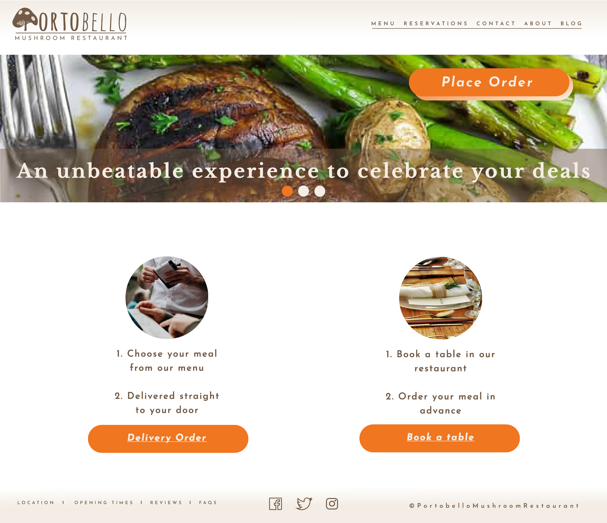
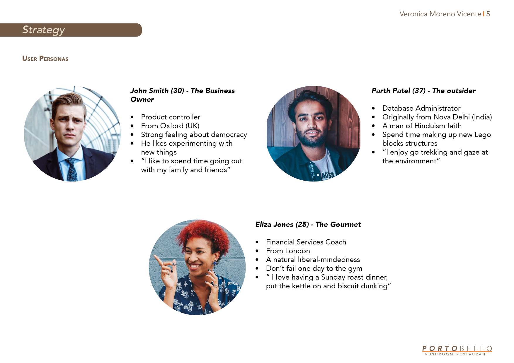
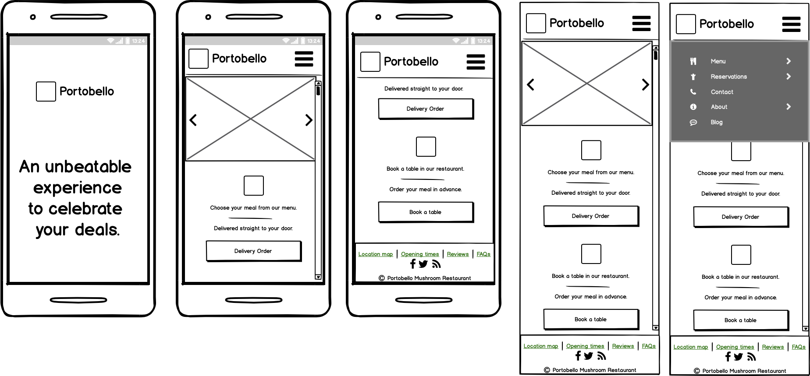
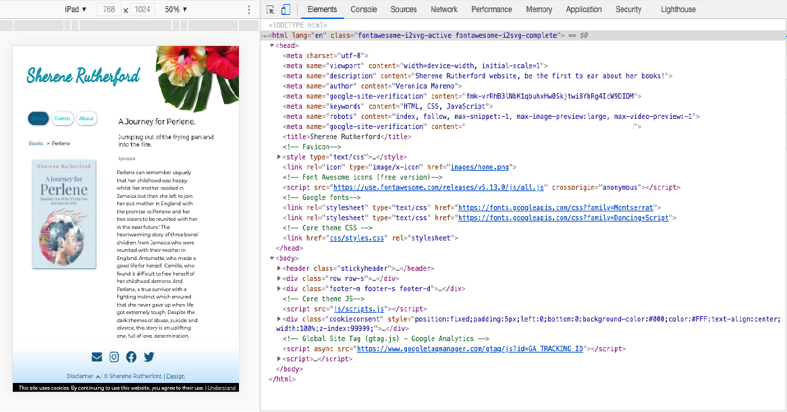
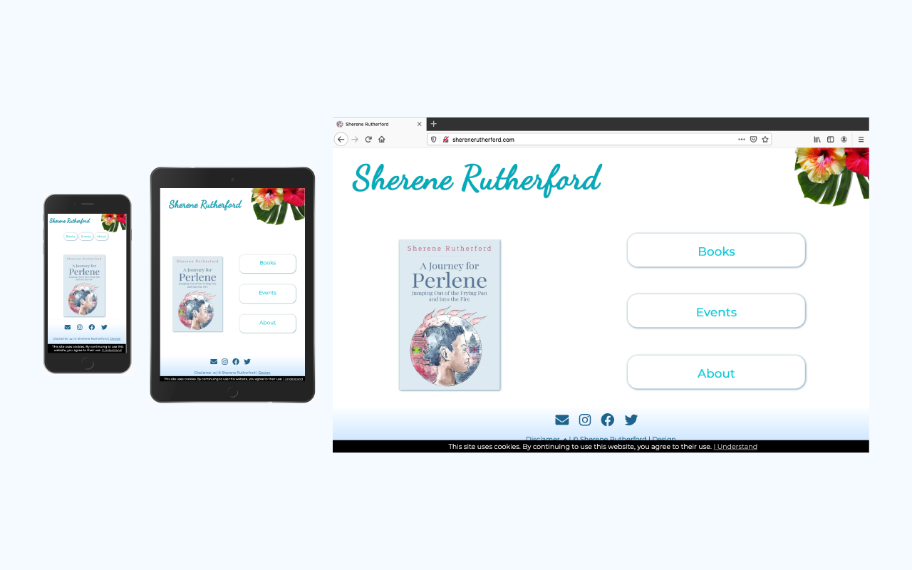
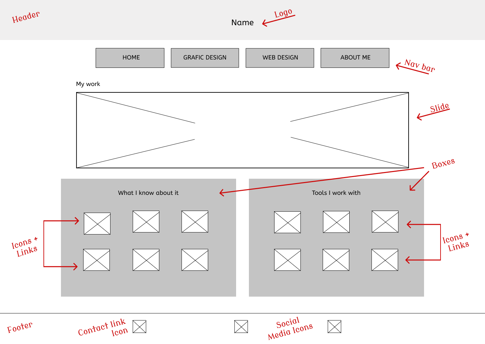
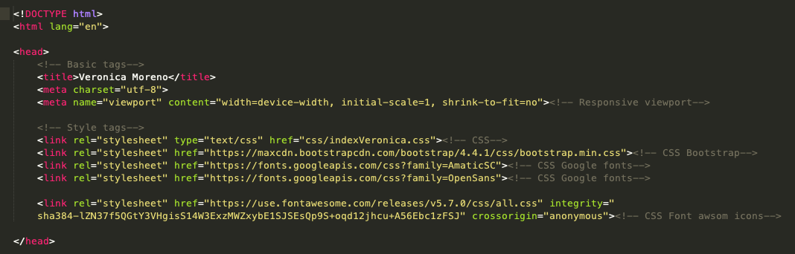
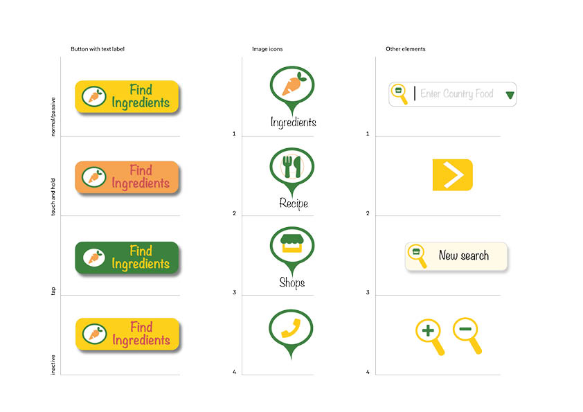
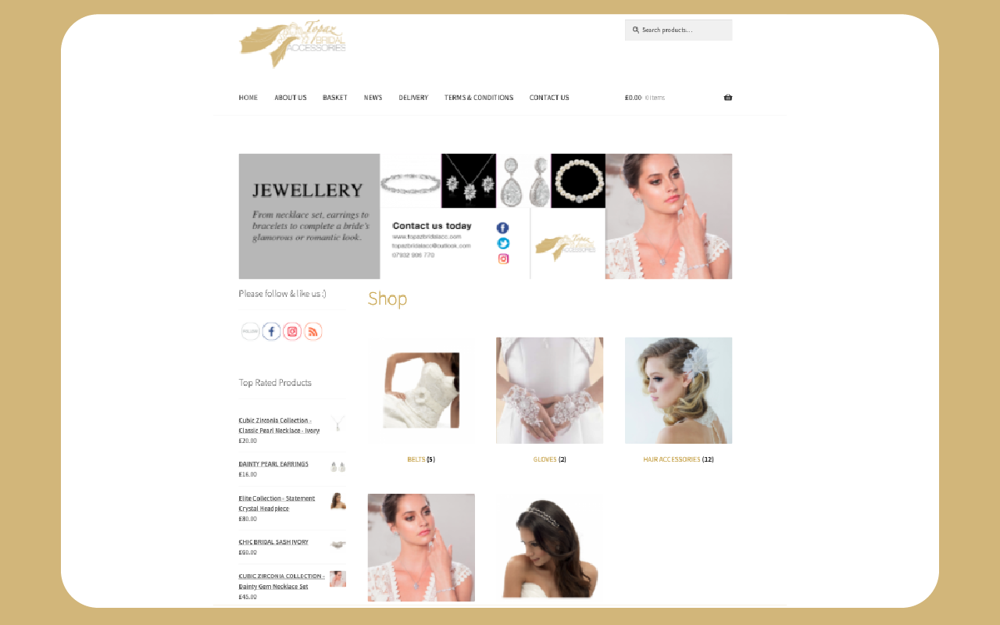
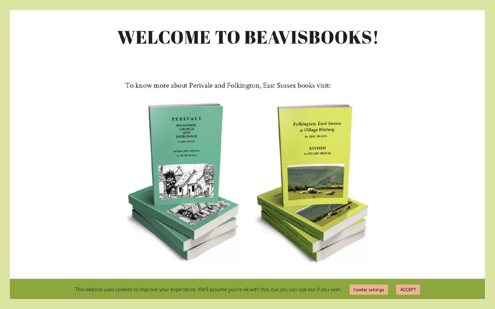

I am from a town in Catalonia (Spain) but I am now settled in London. In Spain, I worked in a library for many years. Although I have always loved designing things, it was not until I started working in the library that I realised the importance of Information Architecture (IA) and began to work on User Interface (UI).
I am creative, persistent, collaborative, and always enjoy learning. I am a committed worker, engaged with my job and I don’t only want to finish my assignments on time, I also want to do a great job. I am responsible and careful. I strongly believe in cooperation and for that reason, I like working with people. I am a patient, quiet and resourceful person.
Portobello Mushroom Restaurant is a site created as a project in one of my courses. It is about a restaurant that serves healthy dishes based on different kinds of mushrooms. With a wide range of ways to cook fungi and using only fresh quality food, Portobello Mushroom Restaurant could be an unbeatable experience to celebrate special occasions or relax after a day in the office.

I designed this start-up from the beginning. I started with the brand guide and as a graphic designer, I designed the logotype and the mark as well as the imagery and mock-ups. However, what I enjoyed the most in this project was the web design process from creating the UX user personas to the final prototype which I tested with several users.


I made the graphic design process with Adobe Illustrator and Adobe Indesign. In this occasion, to make the website wireframes I used Balsamiq, I made the mockups with Illustrator and the prototype with InVision. Also, you can check the project on Behance.
Sherenerutherford.com

Sherenerutherford.com is a website owned by the author Sherene Rutherford. The aim of this site is to promote her books as well as to inform her readers about the coming events.
This project took place with my full involvement, from ideation to design and even generation of the code and test on different devices and platforms.

After a productive meeting with the owner I got the main idea about the purpose of the website: promote and sell her books. Thus, I tried to understand what the easiest way for the user was to know about the books and a practical way for the owner to sell them without managing the sales directly. I started the UX Design process with a strategy and information architecture document, where I did user research, I planned a strategy and designed an outline of scope.
Then I designed the sitemap and the wireframes. After a new meeting with the satisfied owner, I then designed the sitemap and the wireframes. After a new meeting with the satisfied owner, I started the mockup and the prototype which I tested with some potential users. The next step was to start to code the website. This is not a large site, it only has a few pages and does not require a lot of interaction with the user, so I decided to not use any framework and write my own code. Although it is a very simple web site and most of the elements displayed are styled with an external CSS, I also used some internal and external JS. Sherenerutherford.com is responsive thanks to Media Queries and it works properly on different devices.
The purpose of this project is to show some work that I have done and my expertise on the front-end development, so I built it using a framework but without relying on existing templates.
Before I started to build the site, I designed some wireframes to arrange the elements and set the aim of this portfolio.

The first thing I did was to create an HTML5 sheet and edit the head with the usual tags and added new ones: CSS stylesheet, bootstrap, Font Awesome, and google fonts. Then, I created the CSS3 stylesheet to style the website and some Bootstrap Utilities. After that, I started to build the site and added some extras such as a Google map, two Carousels (but I turned off the automatic start), a sticky footer and a fixed navbar to create a consistent look. Finally, I added a custom JavaScript to incorporate a stylized tooltip with CSS. However, I did not consider this project finished until I validated the HTML5 and the CSS3 stylesheet with a Markup Validation.

You can check the repository on GitHub and the case of study on Behance. Also, a view of the final template here.
World Food Ingredients finder

World Food Ingredients Finder is a sketch for a smartphone app that focuses on one simple task: finds a specific food within a given area. This is a customised interface with a unique look and feels for a very specific audience. My target on this project was to focus on the user interface so it only shows the early stage of the designing process.
The first thing I did was define the look, feel, style and mood of this digital product with a brief description and a mood board. Then I created a small pattern library of interface elements for my digital service. At the end I brought together the interface elements into different screens highlighting a different and specific event or function.
I made the design of the elements of this project with Adobe Illustrator. You can watch the details of this start up on Behance.
Topaz Bridal Accessories

Topazbridalacc.com is an online shop that sells accessories for brides with more than 20 years of experience. On this occasion, I worked together with designer Gideon Fanis. While he designed the feel and mood of the online shop, I designed and built the look and style of the website. However, this time I decided to use a CMS like WordPress because it is the easiest way for the shop owner to manage her business on her own. I chose WooCommerce because it was one of the most popular eCommerce platforms at that time.
Beavis Books

Beavisbooks.co.uk is a website to promote two local History books. Hilary Beavis, the owner, started a blog on WordPress on her own and later she asked me to improve it. I made a new hierarchy to the elements on her site, and I designed a logotype for her. Finally, I also added WooCommerce and some plugins to improve positioning in search engines.